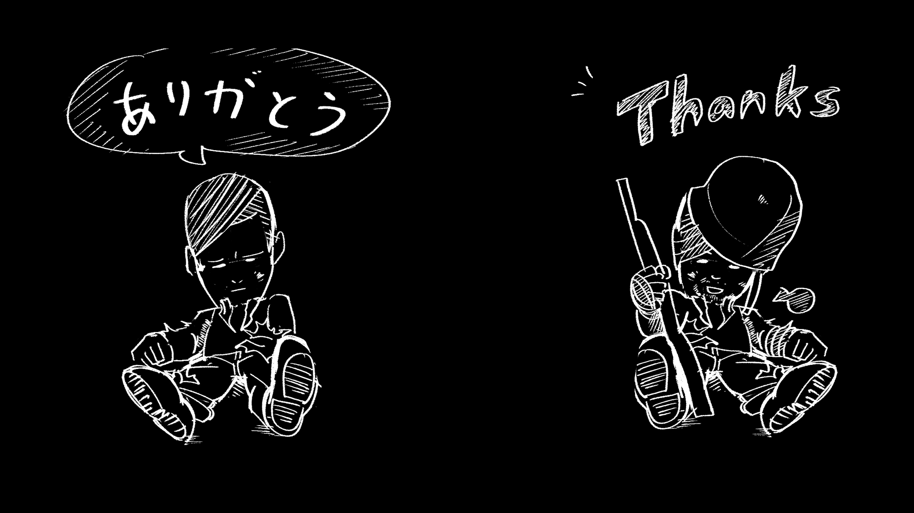

지구촌의 모든 인류는 친구이자 동반자이다.
하지만 지구 곳곳에서 다양한 사상의 갈등이나 욕심으로
전쟁이 벌어지는 현실이다.
더이상 이런일이 반복 되지 않게 하기위해선 과거의 실수를
확실하게 바로잡고, 모두 힘을 합쳐 앞으로 나아가는것이다.
그렇기에, 일본은 과거의 실수를 인정, 사과하고 올바른 방향
으로 함께 나아갔으면 하는 바램이다.
감사합니다.
처음으로